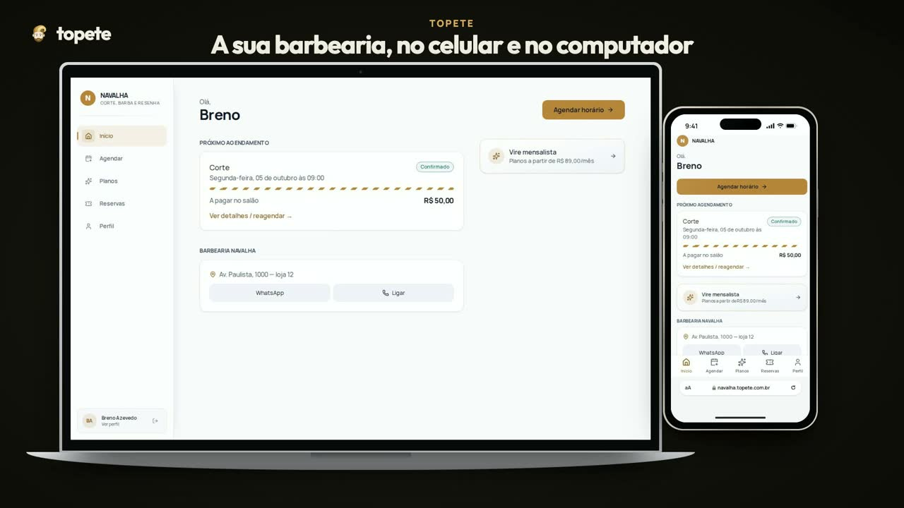

topete
topeteAgenda e gestão para barbearias.
O cliente marca sozinho pelo link. Encaixe, caixa, mensalistas e o lucro do mês — no celular e no computador.

topeteO cliente marca sozinho pelo link. Encaixe, caixa, mensalistas e o lucro do mês — no celular e no computador.